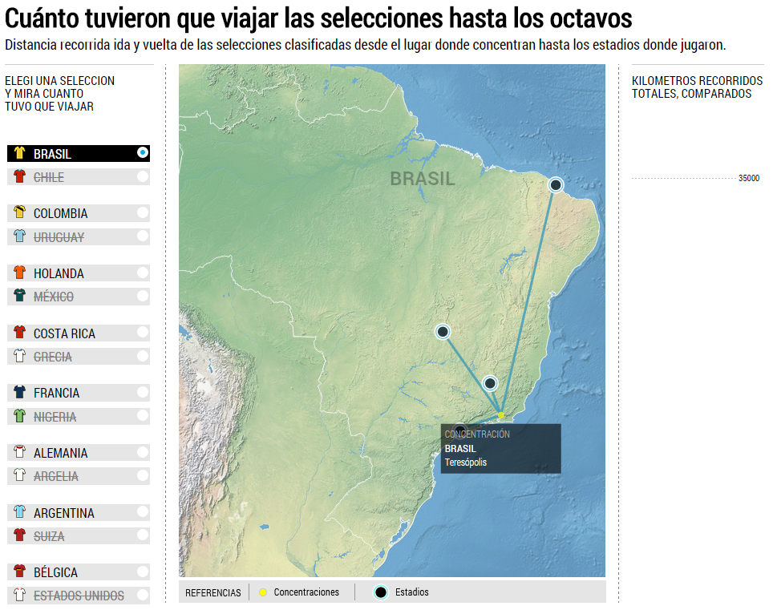

Sobre Nosotros
Proyectos
Proyecto:
Nombre: Soccer Ball Passing Network Graph
Descripcion: Grafico de los pases entre los jugadores de
la selección Argentina en el partido frente a Holanda.
GitHub: <https://github.com/ClarinData/SoccerBallPassingNetworkGraph>
URL: <http://www.clarin.com/pases-seleccion-argentina/>
Lenguajes: Javascript
Librerias: D3.js

Proyecto:
Nombre: Mundial Brasil 2014 / Kilometros recorridos
Descripcion: Grafico de los Kilometros reccorridos
por las selecciones en el mundial del 2014.
GitHub: <https://github.com/ClarinData/MundialBrasil-KilometrosRecorridos>
URL: <http://www.clarin.com/kilometros-brasil2014/>
Lenguajes: Javascript
Librerias: D3.js
